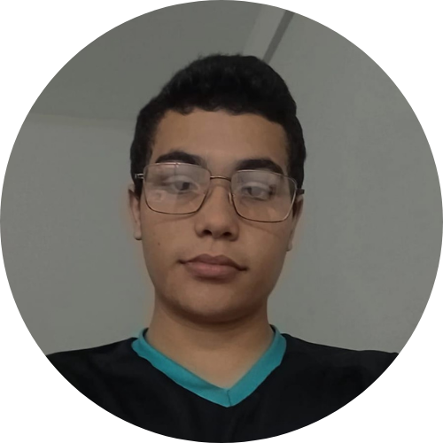

Sobre mim...
Olá me chamo Ornã Keivison, moro em Pureza, RN, sou cristão e apaixonado por programação e robótica. Nos meus momentos livres, adoro cozinhar, que é um dos meus hobbies favoritos. Meu grande sonho é viajar pelo mundo e conhecer muitos culturas diferentes.
Curiosidades
- Adoro plantas e animais;
- Faço musculação;
- Sou professor da escola bíblica infantil;
- Tenho família na Irlanda e pretendo morar lá por um tempo;
- Estou aprendendo inglês, francês e italiano.
Educação
| Ano | Escola |
|---|---|
| pré-escola | Recanto do saber |
| 1°ano | Renascer colégio e curso |
| 2°ano | Ivanira paisinho |
| 3°ano | Ursinho pimpão |
| 4°ano | |
| 5°ano | SELM |
| 6°ano | |
| 7°ano | |
| 8°ano | |
| 9°ano | Jarbas passarinho |
| Ensino Médio | IFRN-CM |
Causos
Uma vez, em uma festa de família, resolvi brincar de mágico e fazer alguns truques para meus primos. Preparei tudo com cuidado, incluindo um truque clássico de desaparecer moedas. Quando chegou a hora, eu disse as palavras mágicas e, para minha surpresa, a moeda realmente desapareceu! Fiquei tão impressionado quanto meus primos, até perceber que a moeda havia caído dentro da minha manga. Quando tentei recuperá-la discretamente, a moeda saiu rolando pelo chão e todos viram. A confusão e as risadas que se seguiram foram inesquecíveis, e até hoje, minha família adora relembrar o dia em que minha mágica deu muito errado e nos proporcionou muita diversão.
Habilidades
- Programação:
- Robótica:
- Cozinhar:
- Projetos de Hardware:
- Resolução de Problemas:
Tenho experiência em programação, desenvolvendo softwares eficientes e inovadores para uma ampla gama de aplicações. Minha proficiência inclui várias linguagens de programação como python, C++ para Arduino e etc...
Participo do grupo robótica, criando e programando robôs para realizar tarefas complexas. Participo ativamente de competições e projetos desafiadores, sempre buscando inovar e melhorar minhas habilidades.
Sou apaixonado por culinária. Gosto de preparar pratos saborosos e criativos, experimentando novos ingredientes e técnicas para aprimorar minhas receitas.
Tenho competências sólidas em projetar e construir hardware. Trabalho na criação de soluções físicas que complementam minhas habilidades de software, desenvolvendo projetos de hardware personalizados e eficientes.
Destaco-me na análise e resolução de problemas complexos. Utilizo meu conhecimento técnico e criatividade para encontrar soluções eficazes e inovadoras, enfrentando desafios com uma abordagem lógica e metódica.